TRAIN Polygon到RGB：48例冻结审查
未训练或运行模型。黄色为所选源片段，青色为同名其它片段；灰色为几何投影，绿色仅为有效RGB/深度支持。不是人工分割或真实可见性Gold。
中文报告 | 源片段逐例数值 | 完整同名地标 | 人工核验模板
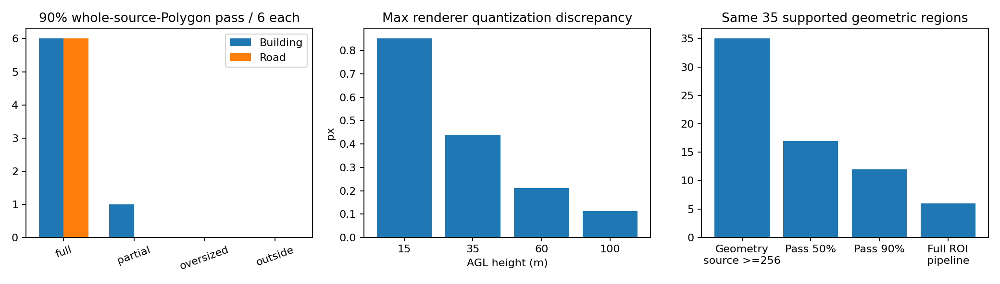
00 St. Teresa of the Child Jesus Catholic Church | birmingham_block_1 | Building
源片段：oversized；完整同名地标几何：partial。Yaw 90°，AGL 15m。
源片段入镜 0.124 / 视野占比 0.188；同名并集入镜 0.124。
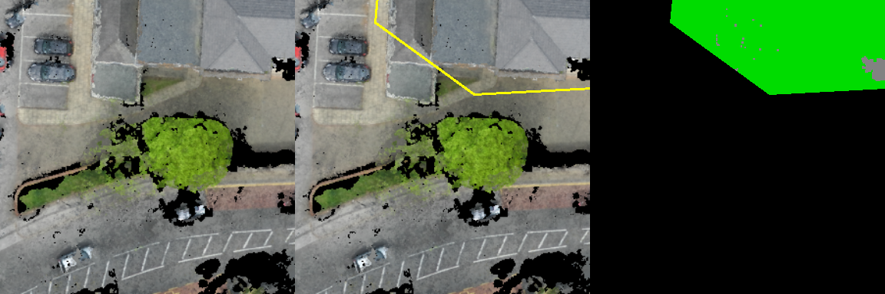
原始384 PNG | 同名几何Mask | 同名有效源Mask | 全部原始轮廓
仅所选源片段对照

AI目视意见（非人工）：局部建筑边缘及树木可见，轮廓仅部分入镜；不能确认屋顶像素边界。
01 Wellington Road | birmingham_block_1 | Road
源片段：oversized；完整同名地标几何：partial。Yaw 270°，AGL 35m。
源片段入镜 0.217 / 视野占比 0.304；同名并集入镜 0.214。
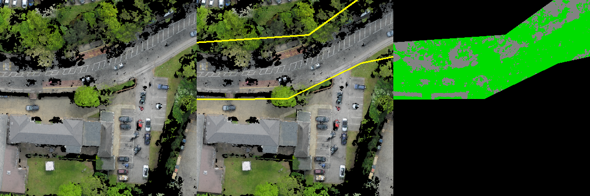
原始384 PNG | 同名几何Mask | 同名有效源Mask | 全部原始轮廓
仅所选源片段对照

AI目视意见（非人工）：道路走向与投影路域大致一致；所选源片段只部分入镜，不核验真实道路名称。
02 Security | birmingham_block_10 | Building
源片段：full；完整同名地标几何：full。Yaw 0°，AGL 15m。
源片段入镜 1.000 / 视野占比 0.034；同名并集入镜 1.000。

原始384 PNG | 同名几何Mask | 同名有效源Mask | 全部原始轮廓
仅所选源片段对照
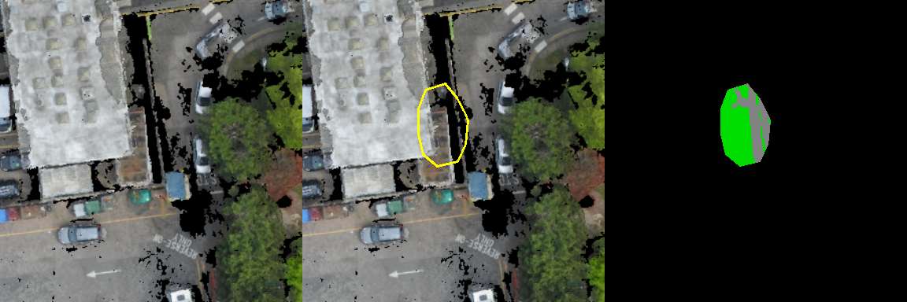
AI目视意见（非人工）：小型建筑/院落区域含明显源像素缺失，不能因几何完整就认为可可靠识别。
03 Aldridge Road | birmingham_block_10 | Road
源片段：oversized；完整同名地标几何：partial。Yaw 315°，AGL 15m。
源片段入镜 0.317 / 视野占比 0.441；同名并集入镜 0.268。
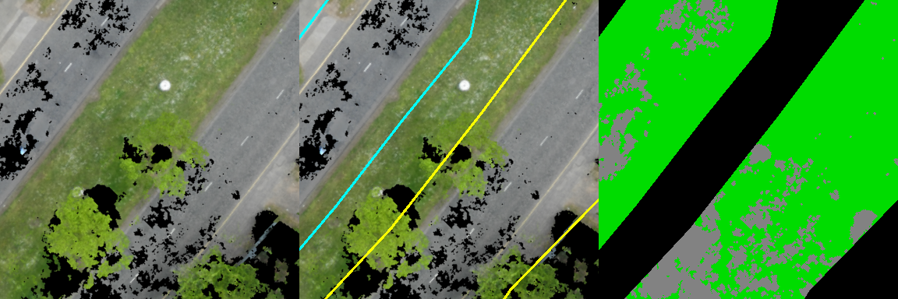
原始384 PNG | 同名几何Mask | 同名有效源Mask | 全部原始轮廓
仅所选源片段对照
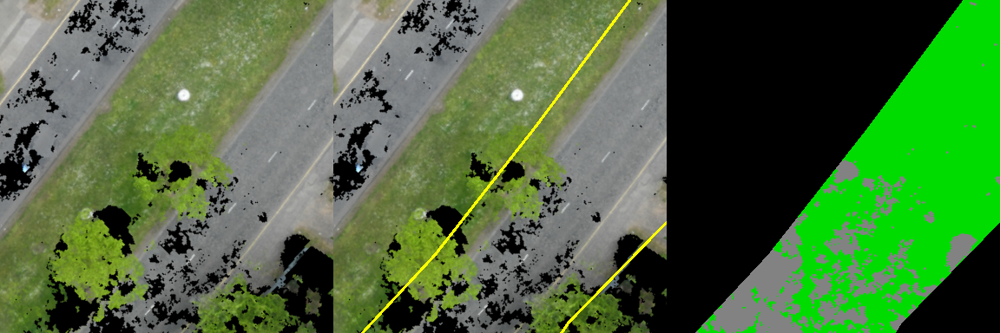
AI目视意见（非人工）：斜向道路走向与投影路域大致一致；黄色边界不是道路视觉分割。
04 West Midlands Police Custody Suite | birmingham_block_12 | Building
源片段：partial；完整同名地标几何：partial。Yaw 135°，AGL 15m。
源片段入镜 0.144 / 视野占比 0.034；同名并集入镜 0.144。

原始384 PNG | 同名几何Mask | 同名有效源Mask | 全部原始轮廓
仅所选源片段对照
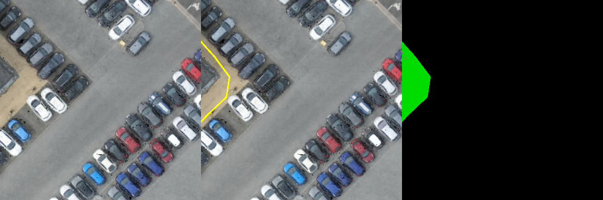
AI目视意见（非人工）：标为Building的投影局部覆盖停车区和车辆，需核验地块/屋顶语义或源轮廓，不能直接判定程序平移错误。
05 CrossCountry: Manchester => Bournemouth (all stations) | birmingham_block_12 | Road
源片段：outside；完整同名地标几何：outside。Yaw 90°，AGL 60m。
源片段入镜 0.000 / 视野占比 0.000；同名并集入镜 0.000。

原始384 PNG | 同名几何Mask | 同名有效源Mask | 全部原始轮廓
仅所选源片段对照
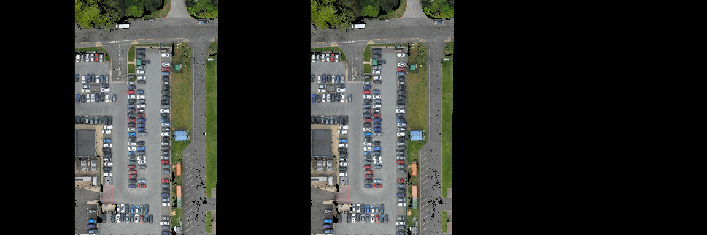
AI目视意见（非人工）：该源片段投影为空；仅确认几何视野外，不通过图像证明命名身份不存在。
06 Perry Barr Carpets | birmingham_block_3 | Building
源片段：outside；完整同名地标几何：outside。Yaw 225°，AGL 100m。
源片段入镜 0.000 / 视野占比 0.000；同名并集入镜 0.000。

原始384 PNG | 同名几何Mask | 同名有效源Mask | 全部原始轮廓
仅所选源片段对照
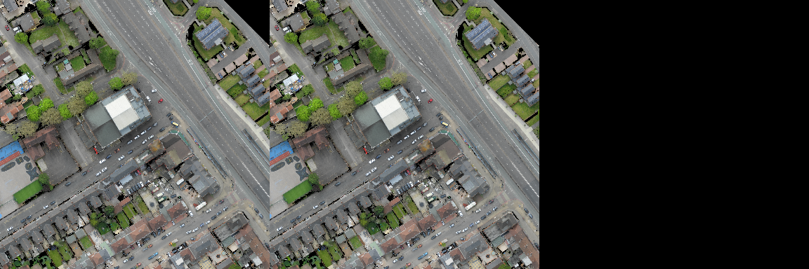
AI目视意见（非人工）：该源Building片段在Footprint外，画面内其它建筑不应冒认为该命名地标。
07 Thornbury Road | birmingham_block_3 | Road
源片段：oversized；完整同名地标几何：partial。Yaw 90°，AGL 15m。
源片段入镜 0.161 / 视野占比 0.630；同名并集入镜 0.161。
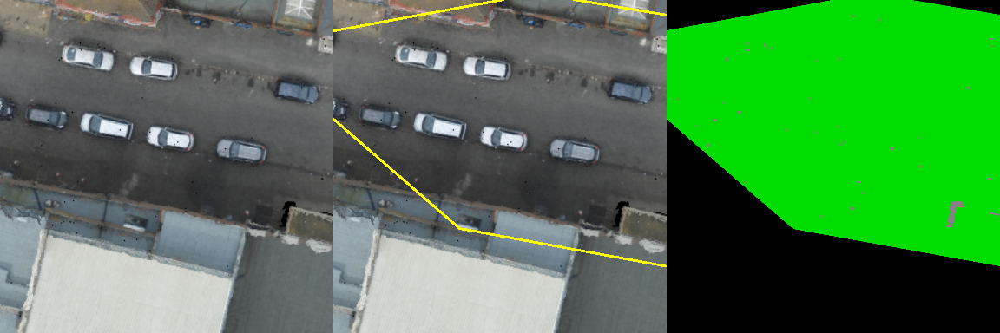
原始384 PNG | 同名几何Mask | 同名有效源Mask | 全部原始轮廓
仅所选源片段对照

AI目视意见（非人工）：可见道路横向贯穿，裁剪轮廓保留大块内部区域，适合检查整物体覆盖率误筛。
08 Perry Barr Methodist Church | birmingham_block_4 | Building
源片段：outside；完整同名地标几何：outside。Yaw 0°，AGL 35m。
源片段入镜 0.000 / 视野占比 0.000；同名并集入镜 0.000。

原始384 PNG | 同名几何Mask | 同名有效源Mask | 全部原始轮廓
仅所选源片段对照
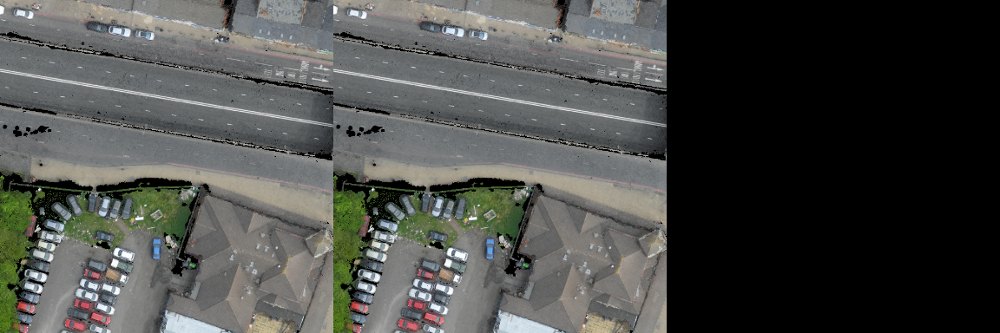
AI目视意见（非人工）：该源片段几何上在视野外，当前RGB不足以核对具体建筑名称。
09 Birchfield Road | birmingham_block_4 | Road
源片段：oversized；完整同名地标几何：partial。Yaw 0°，AGL 15m。
源片段入镜 0.228 / 视野占比 0.367；同名并集入镜 0.075。
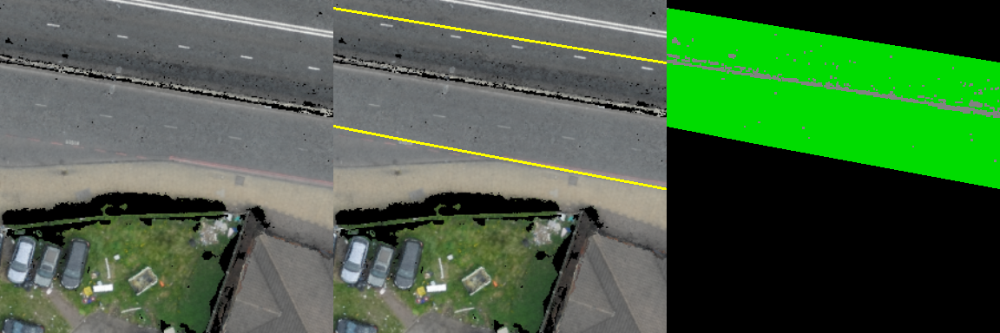
原始384 PNG | 同名几何Mask | 同名有效源Mask | 全部原始轮廓
仅所选源片段对照

AI目视意见（非人工）：道路区域与投影方向大致相符，图像中汽车不构成该路域Polygon的像素真值。
10 Aston Lane | birmingham_block_7 | Road
源片段：partial；完整同名地标几何：partial。Yaw 270°，AGL 100m。
源片段入镜 0.711 / 视野占比 0.068；同名并集入镜 0.739。
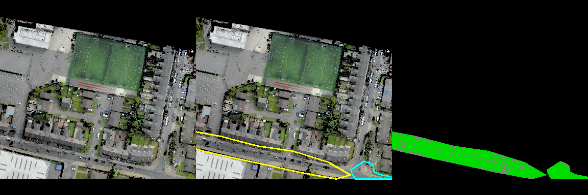
原始384 PNG | 同名几何Mask | 同名有效源Mask | 全部原始轮廓
仅所选源片段对照
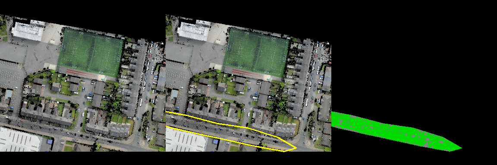
AI目视意见（非人工）：道路仅在画面下缘出现，所选细长片段可作为几何支持但非整条道路可见。
11 Bragg Road | birmingham_block_7 | Road
源片段：full；完整同名地标几何：full。Yaw 225°，AGL 100m。
源片段入镜 0.999 / 视野占比 0.010；同名并集入镜 0.999。

原始384 PNG | 同名几何Mask | 同名有效源Mask | 全部原始轮廓
仅所选源片段对照
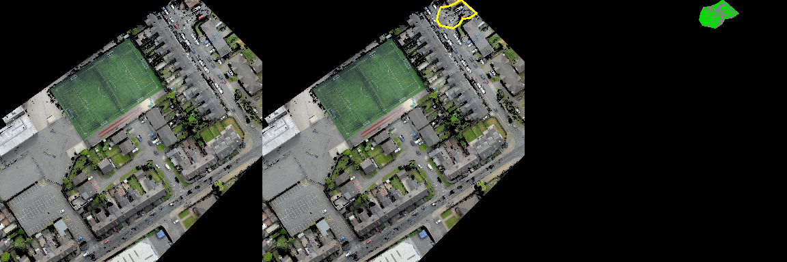
AI目视意见（非人工）：高空的小源片段位于道路/街角，不能将单片段完整等同整个道路名称完整。
12 Aldridge Road | birmingham_block_9 | Road
源片段：oversized；完整同名地标几何：partial。Yaw 180°，AGL 15m。
源片段入镜 0.089 / 视野占比 0.295；同名并集入镜 0.064。
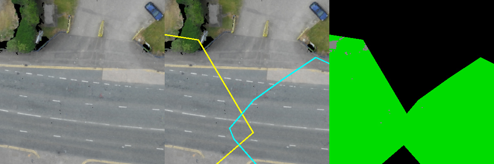
原始384 PNG | 同名几何Mask | 同名有效源Mask | 全部原始轮廓
仅所选源片段对照
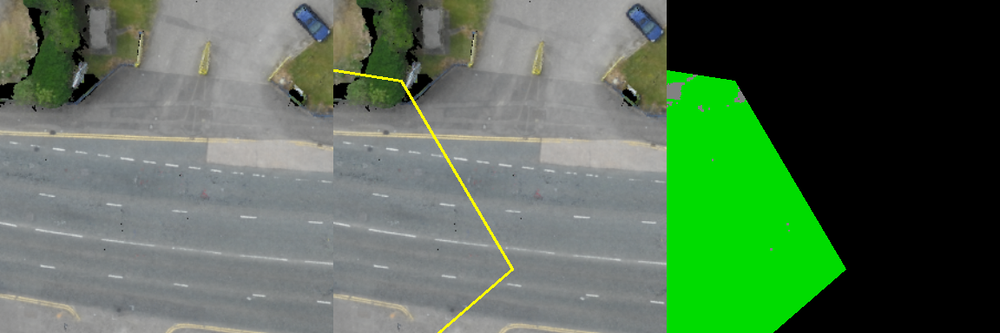
AI目视意见（非人工）：投影为路口附近楔形路域，外观与公共道路区域相容，精确边界仍未知。
13 West Midlands Police Custody Suite | birmingham_block_9 | Building
源片段：oversized；完整同名地标几何：partial。Yaw 180°，AGL 15m。
源片段入镜 0.168 / 视野占比 1.000；同名并集入镜 0.168。
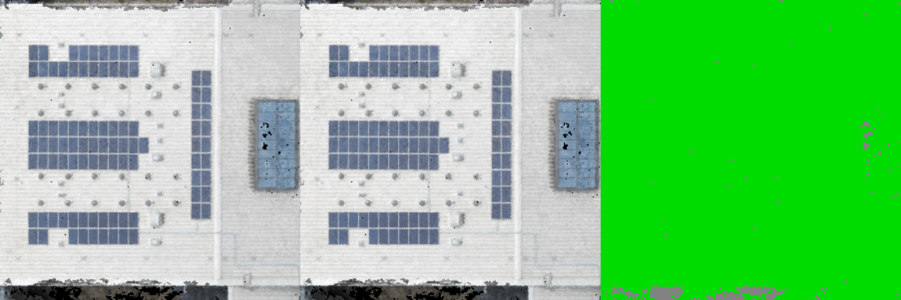
原始384 PNG | 同名几何Mask | 同名有效源Mask | 全部原始轮廓
仅所选源片段对照

AI目视意见（非人工）：画面被屋顶占满，Polygon边界在视野外但内部Mask应为整幅；此例能直接揭示整物体覆盖率过滤问题。
14 Department of History of Art | cambridge_block_12 | Building
源片段：full；完整同名地标几何：partial。Yaw 45°，AGL 35m。
源片段入镜 1.000 / 视野占比 0.045；同名并集入镜 0.838。
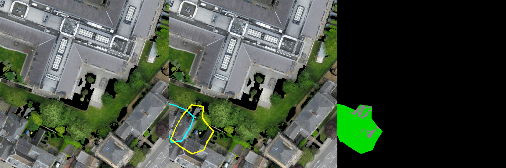
原始384 PNG | 同名几何Mask | 同名有效源Mask | 全部原始轮廓
仅所选源片段对照
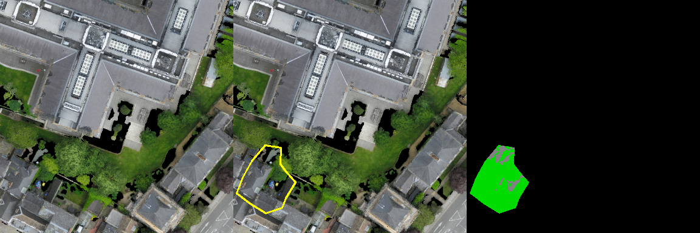
AI目视意见（非人工）：小建筑/院落轮廓大致位于建筑群中，细边界和命名身份无法用总览确认。
15 The Wellcome Trust/Cancer Research UK Gurdon Institute | cambridge_block_12 | Building
源片段：oversized；完整同名地标几何：partial。Yaw 270°，AGL 15m。
源片段入镜 0.203 / 视野占比 0.481；同名并集入镜 0.203。

原始384 PNG | 同名几何Mask | 同名有效源Mask | 全部原始轮廓
仅所选源片段对照
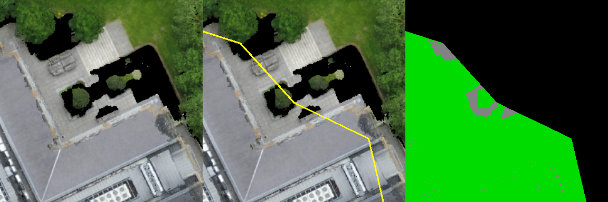
AI目视意见（非人工）：局部大建筑及边缘树木入镜，几何轮廓跨屋顶/边缘区域，不作为精确屋顶Mask。
16 Craik-Marshall Building | cambridge_block_13 | Building
源片段：partial；完整同名地标几何：partial。Yaw 270°，AGL 60m。
源片段入镜 0.115 / 视野占比 0.004；同名并集入镜 0.115。

原始384 PNG | 同名几何Mask | 同名有效源Mask | 全部原始轮廓
仅所选源片段对照
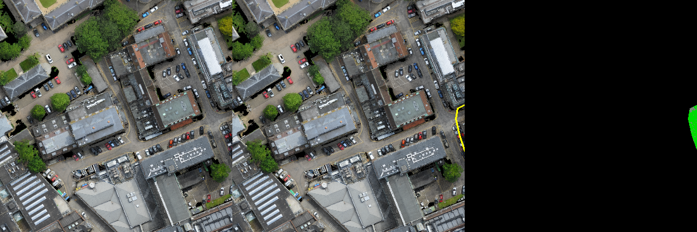
AI目视意见（非人工）：只在右侧边缘有小块几何重叠，不足以核验实例身份或边界偏移。
17 Sir William Hardy Building | cambridge_block_13 | Building
源片段：oversized；完整同名地标几何：partial。Yaw 0°，AGL 15m。
源片段入镜 0.140 / 视野占比 0.217；同名并集入镜 0.140。

原始384 PNG | 同名几何Mask | 同名有效源Mask | 全部原始轮廓
仅所选源片段对照
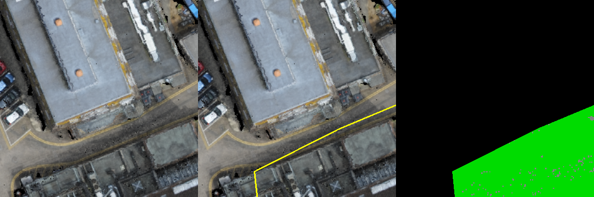
AI目视意见（非人工）：投影跨下方屋顶和道路交界；需区分地面轮廓、屋顶范围及源标注语义，不可当精确建筑分割。
18 Victoria Road | cambridge_block_17 | Road
源片段：full；完整同名地标几何：partial。Yaw 45°，AGL 35m。
源片段入镜 1.000 / 视野占比 0.021；同名并集入镜 0.412。
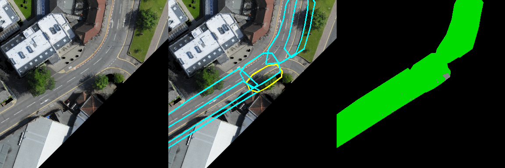
原始384 PNG | 同名几何Mask | 同名有效源Mask | 全部原始轮廓
仅所选源片段对照
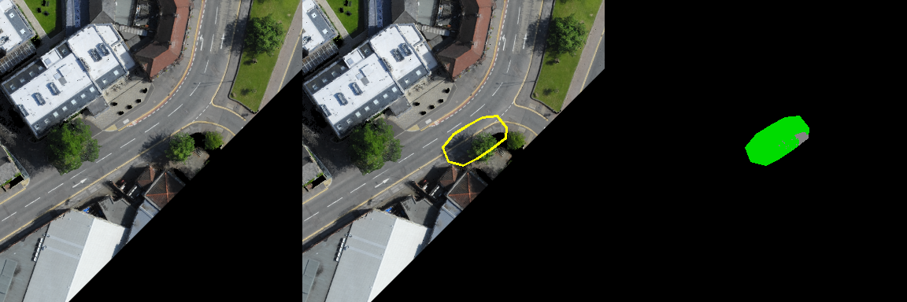
AI目视意见（非人工）：所选Road类源片段实际为Footpath，需查看同名并集，不能据此判断整条道路边界。
19 Lloyds Bank | cambridge_block_17 | Building
源片段：partial；完整同名地标几何：partial。Yaw 90°，AGL 15m。
源片段入镜 0.903 / 视野占比 0.216；同名并集入镜 0.903。

原始384 PNG | 同名几何Mask | 同名有效源Mask | 全部原始轮廓
仅所选源片段对照
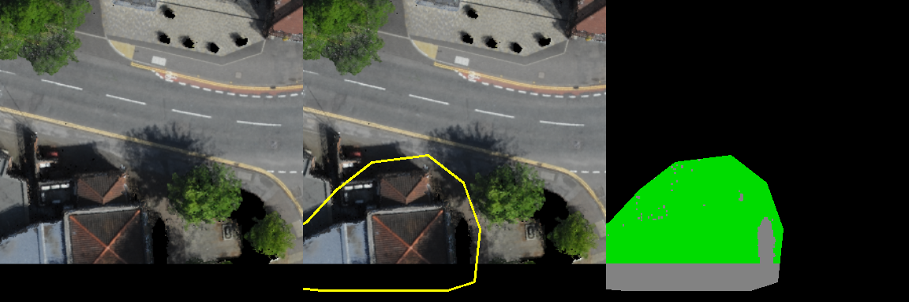
AI目视意见（非人工）：轮廓沿建筑/街角区域，部分RGB缺失；完整几何覆盖不能消除源数据不足。
20 Lensfield Road | cambridge_block_18 | Road
源片段：partial；完整同名地标几何：partial。Yaw 0°，AGL 60m。
源片段入镜 0.439 / 视野占比 0.022；同名并集入镜 0.464。
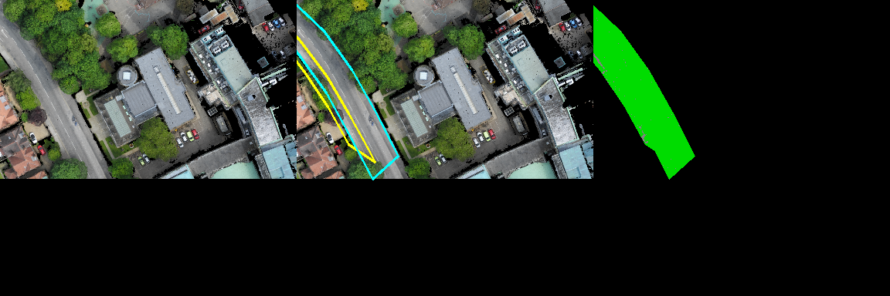
原始384 PNG | 同名几何Mask | 同名有效源Mask | 全部原始轮廓
仅所选源片段对照
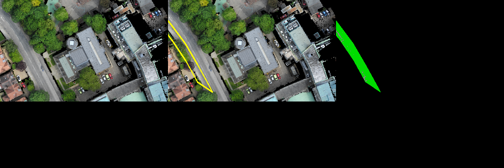
AI目视意见（非人工）：画面左侧道路走向与细长投影大致一致；剪裁边缘几何支持不等于全路可见。
21 Catholic Church of Our Lady and the English Martyrs | cambridge_block_18 | Building
源片段：oversized；完整同名地标几何：partial。Yaw 315°，AGL 15m。
源片段入镜 0.130 / 视野占比 0.189；同名并集入镜 0.130。
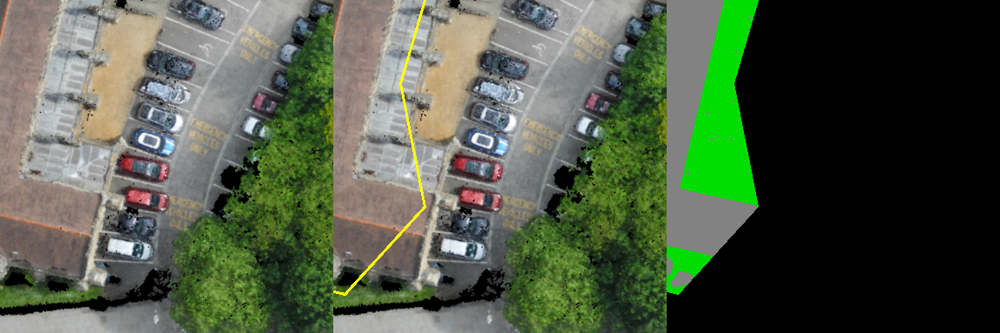
原始384 PNG | 同名几何Mask | 同名有效源Mask | 全部原始轮廓
仅所选源片段对照

AI目视意见（非人工）：投影局部覆盖停车位与通道，不能直接充当教堂屋顶的视觉Mask；深度支持也较低。
22 Fenners Building (Hughes Hall) | cambridge_block_19 | Building
源片段：partial；完整同名地标几何：partial。Yaw 45°，AGL 100m。
源片段入镜 0.314 / 视野占比 0.010；同名并集入镜 0.314。
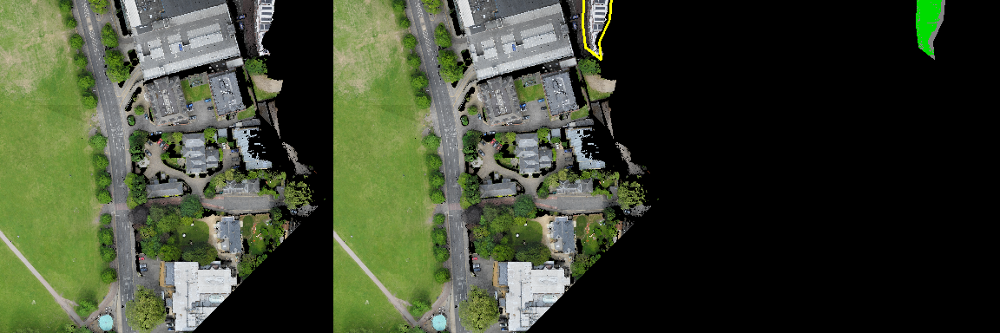
原始384 PNG | 同名几何Mask | 同名有效源Mask | 全部原始轮廓
仅所选源片段对照

AI目视意见（非人工）：仅画面右侧少量重叠，可确认裁剪行为但无法确认细粒度建筑对应。
23 Kelsey Kerridge Sports Centre, Queen Anne Terrace | cambridge_block_19 | Building
源片段：oversized；完整同名地标几何：partial。Yaw 180°，AGL 15m。
源片段入镜 0.070 / 视野占比 0.366；同名并集入镜 0.070。

原始384 PNG | 同名几何Mask | 同名有效源Mask | 全部原始轮廓
仅所选源片段对照
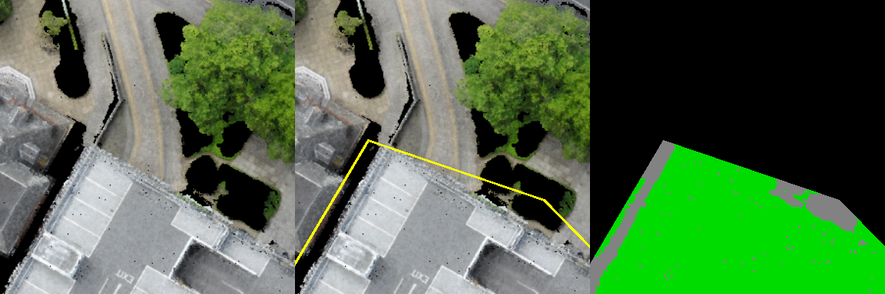
AI目视意见（非人工）：大建筑局部屋顶位于下方，轮廓在视野边缘裁剪；应保留局部区域而非要求整物体入镜。
24 John Street | cambridge_block_20 | Road
源片段：partial；完整同名地标几何：partial。Yaw 45°，AGL 100m。
源片段入镜 0.536 / 视野占比 0.015；同名并集入镜 0.583。
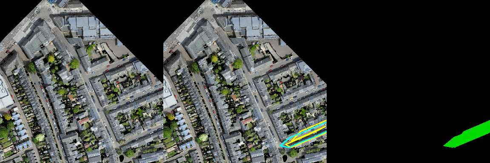
原始384 PNG | 同名几何Mask | 同名有效源Mask | 全部原始轮廓
仅所选源片段对照
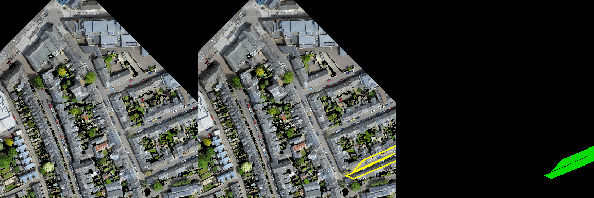
AI目视意见（非人工）：道路细长片段位于下缘，几何走向大致一致；边界需放大查看且没有人工Mask。
25 Guthrie Court | cambridge_block_20 | Building
源片段：outside；完整同名地标几何：outside。Yaw 315°，AGL 60m。
源片段入镜 0.000 / 视野占比 0.000；同名并集入镜 0.000。

原始384 PNG | 同名几何Mask | 同名有效源Mask | 全部原始轮廓
仅所选源片段对照
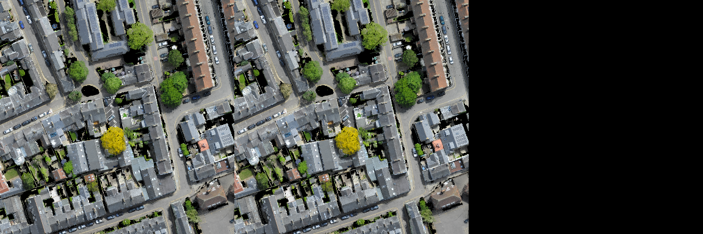
AI目视意见（非人工）：所选源Building片段几何视野外；没有为其制造可见Mask。
26 Prospect Row | cambridge_block_20 | Road
源片段：outside；完整同名地标几何：outside。Yaw 225°，AGL 100m。
源片段入镜 0.000 / 视野占比 0.000；同名并集入镜 0.000。
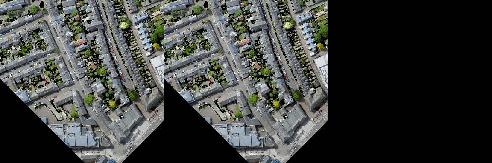
原始384 PNG | 同名几何Mask | 同名有效源Mask | 全部原始轮廓
仅所选源片段对照

AI目视意见（非人工）：所选源Road片段几何视野外；画面内其它道路不是该片段的证据。
27 Maids Causeway | cambridge_block_21 | Road
源片段：outside；完整同名地标几何：outside。Yaw 270°，AGL 35m。
源片段入镜 0.000 / 视野占比 0.000；同名并集入镜 0.000。
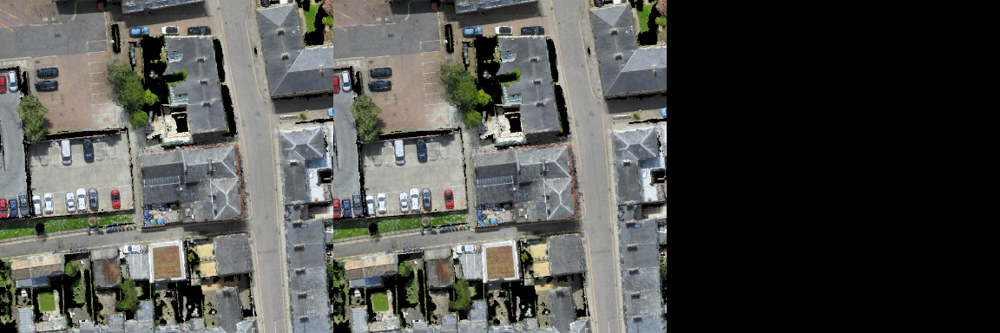
原始384 PNG | 同名几何Mask | 同名有效源Mask | 全部原始轮廓
仅所选源片段对照

AI目视意见（非人工）：所选源Road片段不与Footprint相交；保持几何未知/无覆盖，不评价目标检测。
28 Fitzroy Lane | cambridge_block_21 | Road
源片段：partial；完整同名地标几何：partial。Yaw 135°，AGL 35m。
源片段入镜 0.678 / 视野占比 0.189；同名并集入镜 0.648。
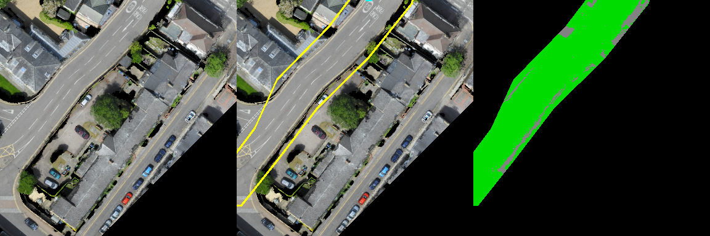
原始384 PNG | 同名几何Mask | 同名有效源Mask | 全部原始轮廓
仅所选源片段对照
AI目视意见（非人工）：斜向路廊与投影大致相符；像素边界精度没有人类Gold。
29 Holistic Harmony | cambridge_block_21 | Building
源片段：full；完整同名地标几何：full。Yaw 270°，AGL 60m。
源片段入镜 1.000 / 视野占比 0.005；同名并集入镜 1.000。

原始384 PNG | 同名几何Mask | 同名有效源Mask | 全部原始轮廓
仅所选源片段对照
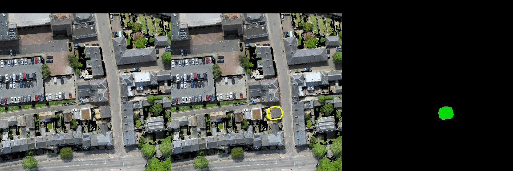
AI目视意见（非人工）：小建筑区域过小，轮廓大致落在建筑密集区，无法确认实际命名或完整外观。
30 Chesterton Road | cambridge_block_23 | Road
源片段：full；完整同名地标几何：full。Yaw 135°，AGL 100m。
源片段入镜 1.000 / 视野占比 0.002；同名并集入镜 1.000。
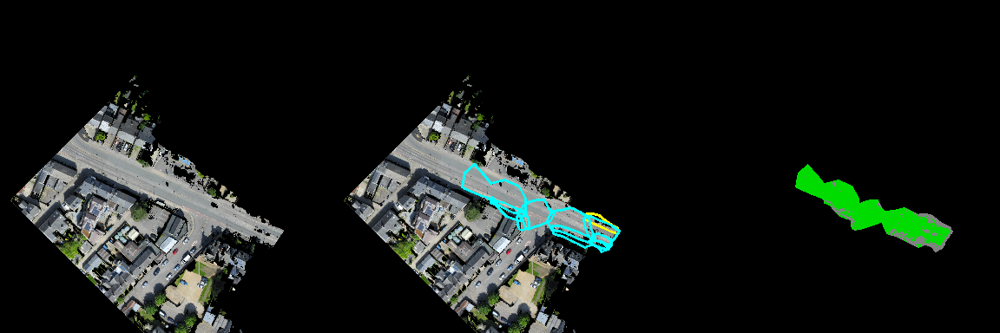
原始384 PNG | 同名几何Mask | 同名有效源Mask | 全部原始轮廓
仅所选源片段对照
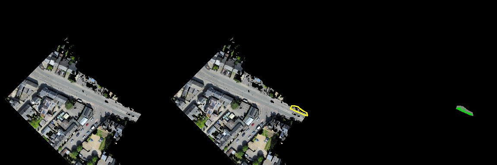
AI目视意见（非人工）：完整的源片段很小且大部分源像素不足，不应把几何完整等同有效观测。
31 Chesterton Road | cambridge_block_23 | Road
源片段：outside；完整同名地标几何：partial。Yaw 135°，AGL 35m。
源片段入镜 0.000 / 视野占比 0.000；同名并集入镜 0.705。
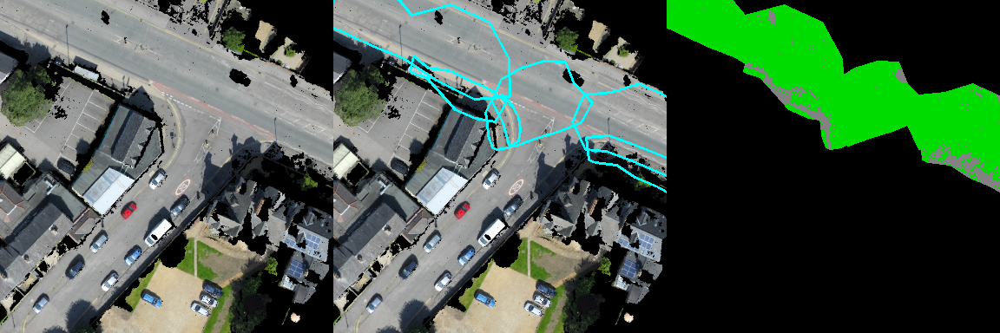
原始384 PNG | 同名几何Mask | 同名有效源Mask | 全部原始轮廓
仅所选源片段对照
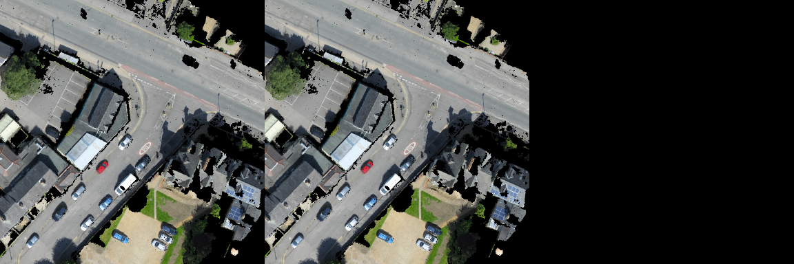
AI目视意见（非人工）：所选Chesterton Road片段在视野外，但同名其他片段与画面相交；必须看具名地标并集。
32 Nelson Court | cambridge_block_23 | Building
源片段：outside；完整同名地标几何：outside。Yaw 135°，AGL 35m。
源片段入镜 0.000 / 视野占比 0.000；同名并集入镜 0.000。
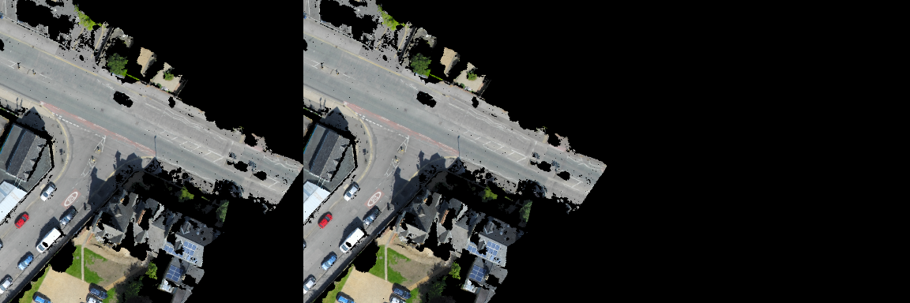
原始384 PNG | 同名几何Mask | 同名有效源Mask | 全部原始轮廓
仅所选源片段对照

AI目视意见（非人工）：所选Building片段在几何视野外，当前图像不能核对指定名称。
33 Palmers Walk | cambridge_block_25 | Road
源片段：full；完整同名地标几何：full。Yaw 315°，AGL 60m。
源片段入镜 1.000 / 视野占比 0.006；同名并集入镜 1.000。

原始384 PNG | 同名几何Mask | 同名有效源Mask | 全部原始轮廓
仅所选源片段对照
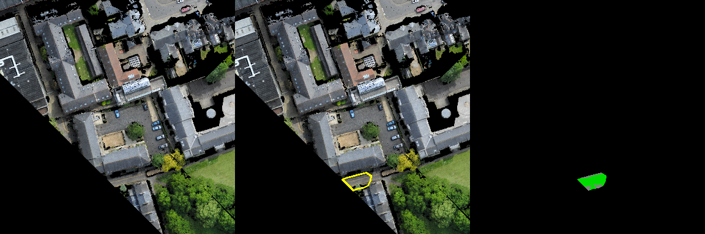
AI目视意见（非人工）：细小Footpath片段位于视野边缘且有源缺失，无法可靠确认精细视觉边界。
34 Swinhoe House | cambridge_block_25 | Building
源片段：full；完整同名地标几何：full。Yaw 225°，AGL 100m。
源片段入镜 1.000 / 视野占比 0.021；同名并集入镜 1.000。
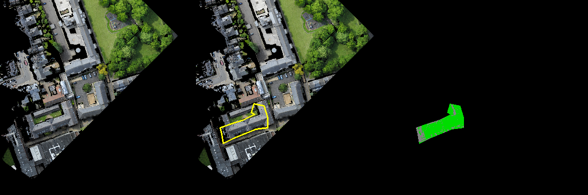
原始384 PNG | 同名几何Mask | 同名有效源Mask | 全部原始轮廓
仅所选源片段对照

AI目视意见（非人工）：建筑轮廓大致落在画面下方建筑区，边缘源缺失使真实轮廓判断不可靠。
35 Midsummer Meadows | cambridge_block_28 | Road
源片段：full；完整同名地标几何：partial。Yaw 90°，AGL 35m。
源片段入镜 1.000 / 视野占比 0.044；同名并集入镜 0.345。
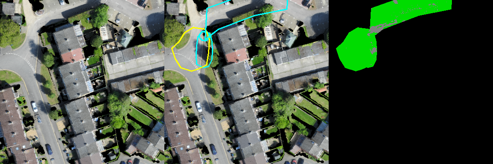
原始384 PNG | 同名几何Mask | 同名有效源Mask | 全部原始轮廓
仅所选源片段对照
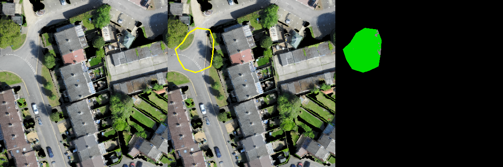
AI目视意见（非人工）：Road分组中的源类型为Footpath/铺装区；外观可作粗区域参考，不能代替道路语义分割。
36 Downing College Boat Club | cambridge_block_28 | Building
源片段：outside；完整同名地标几何：outside。Yaw 45°，AGL 100m。
源片段入镜 0.000 / 视野占比 0.000；同名并集入镜 0.000。

原始384 PNG | 同名几何Mask | 同名有效源Mask | 全部原始轮廓
仅所选源片段对照
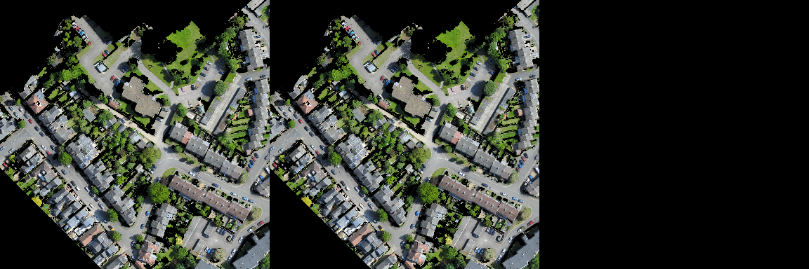
AI目视意见（非人工）：Boat Club源轮廓在几何视野外，无伪造可见Mask。
37 Newmarket Road | cambridge_block_33 | Road
源片段：partial；完整同名地标几何：partial。Yaw 180°，AGL 35m。
源片段入镜 0.831 / 视野占比 0.036；同名并集入镜 0.465。
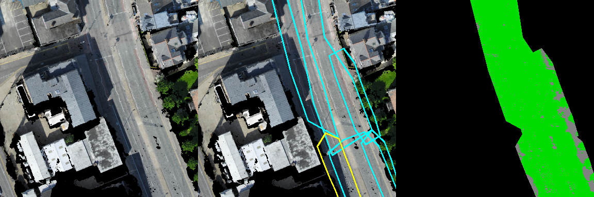
原始384 PNG | 同名几何Mask | 同名有效源Mask | 全部原始轮廓
仅所选源片段对照
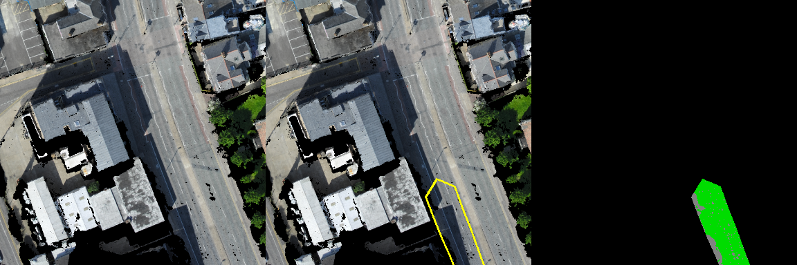
AI目视意见（非人工）：部分路域出现在街角附近，轮廓形状与铺装路域相容，但命名及精细边界未知。
38 Ninja House | cambridge_block_33 | Building
源片段：partial；完整同名地标几何：partial。Yaw 180°，AGL 35m。
源片段入镜 0.167 / 视野占比 0.022；同名并集入镜 0.167。

原始384 PNG | 同名几何Mask | 同名有效源Mask | 全部原始轮廓
仅所选源片段对照
AI目视意见（非人工）：仅建筑边缘少量入镜，完整物体不在画面中；几何部分覆盖不等于不可用。
39 Castle Street | cambridge_block_4 | Road
源片段：outside；完整同名地标几何：outside。Yaw 45°，AGL 100m。
源片段入镜 0.000 / 视野占比 0.000；同名并集入镜 0.000。

原始384 PNG | 同名几何Mask | 同名有效源Mask | 全部原始轮廓
仅所选源片段对照
AI目视意见（非人工）：Castle Street所选片段几何视野外，不以画面中的其它道路作替代。
40 St Peter's | cambridge_block_4 | Building
源片段：full；完整同名地标几何：full。Yaw 135°，AGL 100m。
源片段入镜 1.000 / 视野占比 0.003；同名并集入镜 1.000。
原始384 PNG | 同名几何Mask | 同名有效源Mask | 全部原始轮廓
仅所选源片段对照

AI目视意见（非人工）：小型建筑投影很小且源支持有限，需要更可靠轮廓标注才能评价像素误差。
41 The Fen Causeway | cambridge_block_6 | Road
源片段：oversized；完整同名地标几何：partial。Yaw 0°，AGL 15m。
源片段入镜 0.161 / 视野占比 0.255；同名并集入镜 0.046。
原始384 PNG | 同名几何Mask | 同名有效源Mask | 全部原始轮廓
仅所选源片段对照

AI目视意见（非人工）：路域及路侧区域沿相同走向，可作为粗空间锚点，不能当精确沥青Mask。
42 Causewayside | cambridge_block_6 | Building
源片段：outside；完整同名地标几何：outside。Yaw 90°，AGL 60m。
源片段入镜 0.000 / 视野占比 0.000；同名并集入镜 0.000。

原始384 PNG | 同名几何Mask | 同名有效源Mask | 全部原始轮廓
仅所选源片段对照
AI目视意见（非人工）：所选Building源Polygon几何视野外，当前树木/道路画面不能验证该实例。
43 Erasmus Building | cambridge_block_7 | Building
源片段：full；完整同名地标几何：full。Yaw 315°，AGL 60m。
源片段入镜 1.000 / 视野占比 0.051；同名并集入镜 1.000。
原始384 PNG | 同名几何Mask | 同名有效源Mask | 全部原始轮廓
仅所选源片段对照

AI目视意见（非人工）：L形建筑轮廓与可见建筑群轮廓大致相容，是较直观的粗对应案例；仍非人工像素GT。
44 Free School Lane | cambridge_block_7 | Road
源片段：full；完整同名地标几何：partial。Yaw 180°，AGL 60m。
源片段入镜 1.000 / 视野占比 0.009；同名并集入镜 0.641。
原始384 PNG | 同名几何Mask | 同名有效源Mask | 全部原始轮廓
仅所选源片段对照
AI目视意见（非人工）：多叉路/院落源区域大致对应图像铺装区域；完整源片段不自动等于完整命名道路。
45 Quayside | cambridge_block_9 | Road
源片段：outside；完整同名地标几何：outside。Yaw 315°，AGL 60m。
源片段入镜 0.000 / 视野占比 0.000；同名并集入镜 0.000。
原始384 PNG | 同名几何Mask | 同名有效源Mask | 全部原始轮廓
仅所选源片段对照

AI目视意见（非人工）：Quayside源片段几何视野外，没有用其它可见地物填补对应。
46 Jesus Lane | cambridge_block_9 | Road
源片段：partial；完整同名地标几何：partial。Yaw 225°，AGL 60m。
源片段入镜 0.669 / 视野占比 0.005；同名并集入镜 0.047。
原始384 PNG | 同名几何Mask | 同名有效源Mask | 全部原始轮廓
仅所选源片段对照
AI目视意见（非人工）：只有上缘少量路域片段可见，图像边界及小面积使精确对应难判断。
47 Mallory Court | cambridge_block_9 | Building
源片段：partial；完整同名地标几何：partial。Yaw 225°，AGL 35m。
源片段入镜 0.342 / 视野占比 0.053；同名并集入镜 0.342。

原始384 PNG | 同名几何Mask | 同名有效源Mask | 全部原始轮廓
仅所选源片段对照
AI目视意见（非人工）：部分建筑轮廓在右下角裁剪，与屋顶区域大致相容；精细边界/命名尚未人工确认。